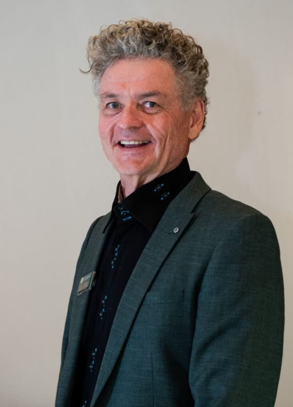
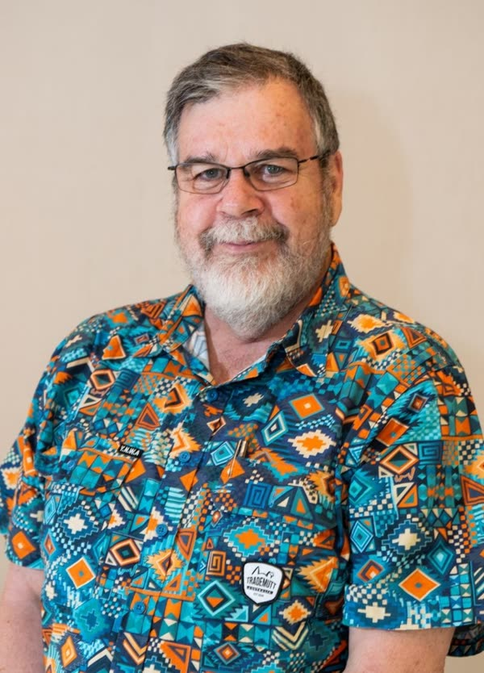

Dr Justin Coleman
Editor, Murtagh's General Practice 9th Ed.
Home · More · Advisory Committee
Governance
Experienced clinicians and educators who guide the direction of GP Refresh and keep it focused on what matters in everyday practice.
Advisory Committee
Editor, Murtagh's General Practice 9th Ed.
Past RACGP President

Past RACGP Vice-President

Specialist GP
Specialist Plastic Surgeon
Experienced GP
Swipe →
Scientific Committee
Chaired by Dr Justin Coleman, the Scientific Committee selects every clinical topic and reviews every talk.